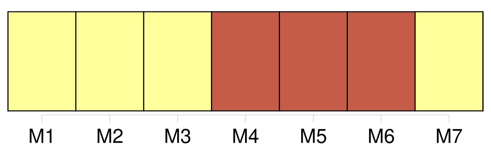

Longueur nb maillons : 7 mentions |
 |
Le jour, j’ étais un prêtre du Seigneur, chaste, occupé de la prière et des choses saintes ; la nuit, dès que j’ avais fermé [les yeux] , je devenais un jeune seigneur, fin connaisseur en femmes, en chiens et en chevaux, jouant aux dés, buvant et blasphémant ; et lorsqu’ au lever de l’ aube je me réveillais, il me semblait au contraire que je m’ endormais et que je rêvais que j’ étais prêtre. [30 phrases]
Une minute après, je rouvris [les yeux] , car à travers mes cils je la voyais étincelante des couleurs du prisme, et dans une pénombre pourprée comme lorsqu’ on regarde le soleil. [59 phrases] Je n’ avais qu’ à fermer [les yeux] pour la voir aussi distinctement que si elle eût été présente en réalité, et je me redisais ces mots, qu’ elle m’ avait dits sous le portail de l’ église : « Malheureux!! [24 phrases]
— J’ eus honte de moi -même, et, laissant tomber ma tête sur ma poitrine, je voilai [mes yeux] avec mes mains. [10 phrases]
J’ ouvris mon missel, et je commençai à lire des prières ; mais ces lignes se confondirent bientôt sous [mes yeux] ; le fil des idées s’ enchevêtra dans mon cerveau, et le volume me glissa des mains sans que j’ y prisse garde. [87 phrases] Dans ce mouvement, [mes yeux] tombèrent sur le lit de parade qu’ ils avaient jusqu’ alors évité. [242 phrases] Pour éviter de tomber dans ces fatigantes hallucinations, j’ essayais de m’ empêcher de dormir, je tenais mes paupières ouvertes avec les doigts et je restais debout au long des murs, luttant contre le sommeil de toutes mes forces ; mais le sable de l’ assoupissement me roulait bientôt dans [les yeux] , et, voyant que toute lutte était inutile, je laissais tomber les bras de découragement et de lassitude, et le courant me rentraînait vers les rives perfides. |

|
Il est possible de télécharger la ressource sur la page Ortolang |
Si vous avez des questions ou vous voyez des erreurs, merci d'envoyer un mail à silvia.federzoni89@gmail.com |